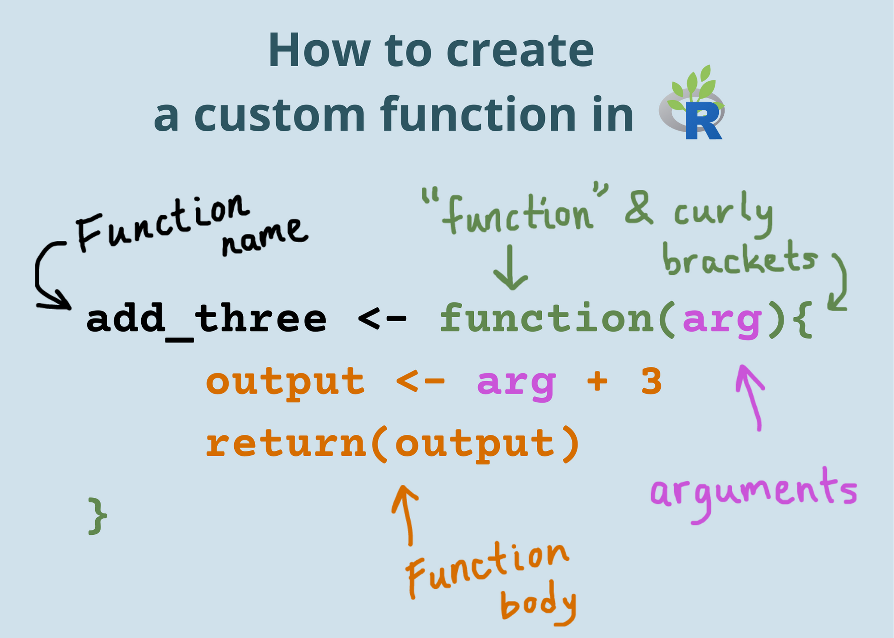
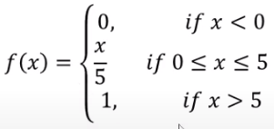

identidad_estandar <- function(x){
x <- x
return(x)
}
identidad_estandar(2)[1] 2identidad_estandar(x=2)[1] 2
identidad_estandar <- function(x){
x <- x
return(x)
}
identidad_estandar(2)[1] 2identidad_estandar(x=2)[1] 2identidad_lineal <- function(x) x
identidad_lineal(2)[1] 2identidad_lineal_etiqueta = function(x){
x = x
}
identidad_lineal_etiqueta(4)- Con etiquetaidentidad_lineal_etiqueta = function(x){
x = x
cat("Respuesta:",x)
}
identidad_lineal_etiqueta(4)Respuesta: 4inversa <- function(x){
x <- 1/x
return(x)
}
inversa(8)[1] 0.125suma <- function(x,y){
return(x+y)
}
suma(1,2)[1] 3resta <- function(x,y){
diferencia <- x - y
return(diferencia)
}
resta(2,1)[1] 1media <- function(x,y){
resultado <- (x+y)/2
return(resultado)
}
media(1,2)[1] 1.5if (3>2) print("hola") else print("mundo")[1] "hola"if (3<2) {
print("hola")
} else {
print("mundo")
}[1] "mundo"if (3<2) {
print("hola")
} else {
if (2<1) {
print("mundo")
} else {
print("hola mundo")
}
}[1] "hola mundo"
mi_funcion <- function(x){
if (x<0){
return(0)
} else {
if (x>=0 & x<=5) {
return(x/5)
} else {
return(1)
}
}
}
mi_funcion(-2)[1] 0mi_funcion(4)[1] 0.8mi_funcion(6)[1] 1mi_funcion_negacion <- function(x){
if (!(x<0)){
if (!(x>=0 & x<=5)) {
return(1)
} else {
return(x/5)
}
} else {
return(0)
}
}
mi_funcion_negacion(-2)[1] 0mi_funcion_negacion(4)[1] 0.8mi_funcion_negacion(6)[1] 1No es recomendable usar if-else anidados, en vez de ello utilice clausulas de guarda (guard clauses)
mi_funcion_guardia <- function(x){
if (x<0){
return(0)
}
if (x>=0 & x<=5){
return(x/5)
}
if (x>5) {
return(1)
}
}
mi_funcion_guardia(-2)[1] 0mi_funcion_guardia(4)[1] 0.8mi_funcion_guardia(6)[1] 1Permite evaluar estructuras de control secuencias con vectores.
# dados los siguientes vectores
genero <- c("hombre", "hombre", "mujer", "hombre", "mujer")
edad <- c(10,14,80,56,27)
ifelse(genero=="hombre",
ifelse(edad>=18, "hombre adulto", "hombre joven"),
ifelse(edad>=18, "mujer adulta", "mujer joven")
)[1] "hombre joven" "hombre joven" "mujer adulta" "hombre adulto"
[5] "mujer adulta" for (n in c(1,2,3)) print(n)[1] 1
[1] 2
[1] 3for (n in seq(1:3)){
print(n)
}[1] 1
[1] 2
[1] 3for (i in c(1,2,3)){
for (j in c(4,5,6)){
print(i+j)
}
}[1] 5
[1] 6
[1] 7
[1] 6
[1] 7
[1] 8
[1] 7
[1] 8
[1] 9for (iter in 1:15){
if (iter==3) next
if (iter==6) break
print(iter)
}[1] 1
[1] 2
[1] 4
[1] 5# dado dos vectores
x <- c(1,2,3,4)
y <- c(5,6,7,8)
n <- length(x) # ó length(y)
z <- numeric(n) # crea un vector, de longitud n, de ceros
i <- 0
while (i<n){
z[i] <- x[i] + y[i]
i <- i+1
}
print(z)[1] 6 8 10 0